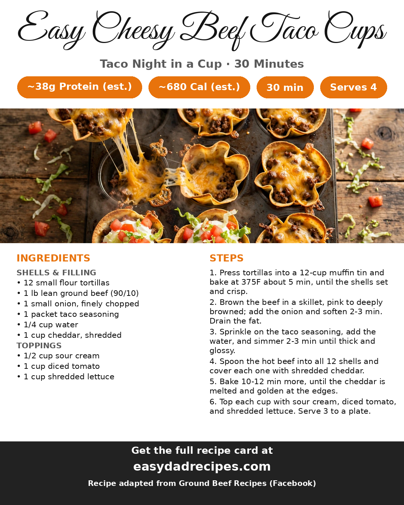

2026-11-01
Taco night has an upgrade problem: everybody wants seconds, the shells crack, and half the filling ends up on the plate. These cups fix all of it. Small flour tortillas get pressed into a muffin tin and baked into crisp little bowls, then filled with taco-seasoned beef and onion, buried under cheddar, and baked again until the cheese melts down and goes golden at the edges. Sour cream, diced tomato, and shredded lettuce go on cold at the end — hot crunch, cool crunch, all in one hand-held bite.
The whole tin takes about 30 minutes, and a three-cup serving lands around 38 grams of protein. It is a weeknight dinner that eats like party food, which is exactly the point.
The shells get a five-minute head start in the oven before any filling goes in. That first bake sets the pleats, so the tortillas hold their bowl shape under a heavy, juicy filling instead of slumping. The second bake is shorter than you would think — ten to twelve minutes — because the beef goes in hot from the skillet and only the cheddar needs to melt.
The filling is just lean ground beef, a finely chopped onion, and a packet of taco seasoning, but the order matters. Let the beef go properly brown and crisp at the edges before the onion joins it, and give the seasoning a splash of water and two minutes to simmer into a thick, glossy sauce. Watery beef makes soggy cups; a reduced, coated filling keeps the shells crisp to the last bite.
The toppings are not a garnish, they are half the experience: a cool dollop of sour cream, juicy diced tomato, and a tangle of shredded lettuce over the hot, cheesy cups. Put the bowls on the table and let everybody finish their own three — just do not wait too long, because the shells are at their loudest crunch in the first ten minutes.
Ground turkey or chicken works in place of the beef with the same seasoning. A cheddar and Monterey Jack blend melts even silkier. Diced jalapeño or a spoonful of salsa on top brings the heat, and Greek yogurt stands in for sour cream without changing the tang. The recipe doubles cleanly in two tins for a crowd.
Full ingredient amounts and the printable card are on the Easy Cheesy Beef Taco Cups recipe page. Recipe adapted from Ground Beef Recipes' Facebook reel and their linked written recipe at recipesown.com — one honest note: their printable card lists wonton wrappers, but the reel itself builds the cups from tortillas in a muffin tin, so that is the version we make; the shredded-lettuce amount is our estimate.
Here's the card — save it for next time:

Want the printable version? Get it here: Easy Cheesy Beef Taco Cups
Credit: Recipe by Ground Beef Recipes (Facebook Page) — and Full written recipe at RecipesOwn
— Dad
One email a week — the new recipes and the week's meal plan.
Subscribe free